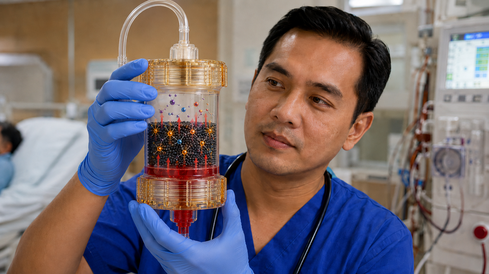
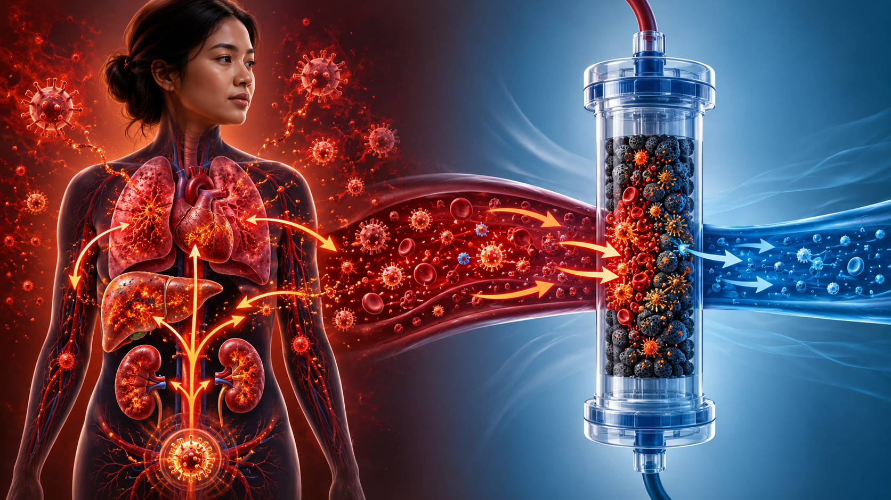
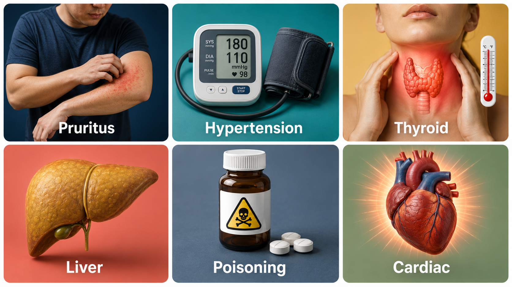
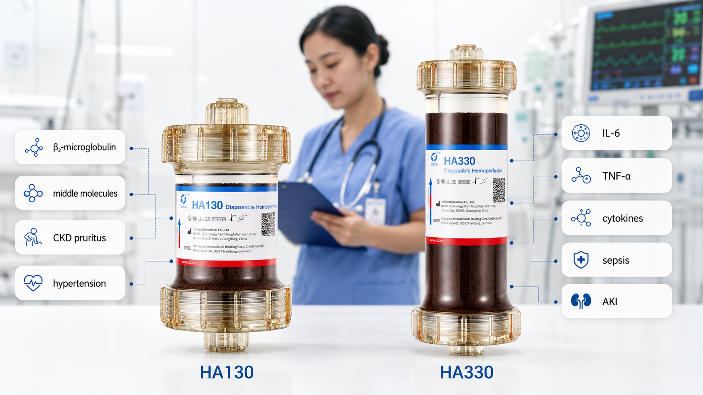
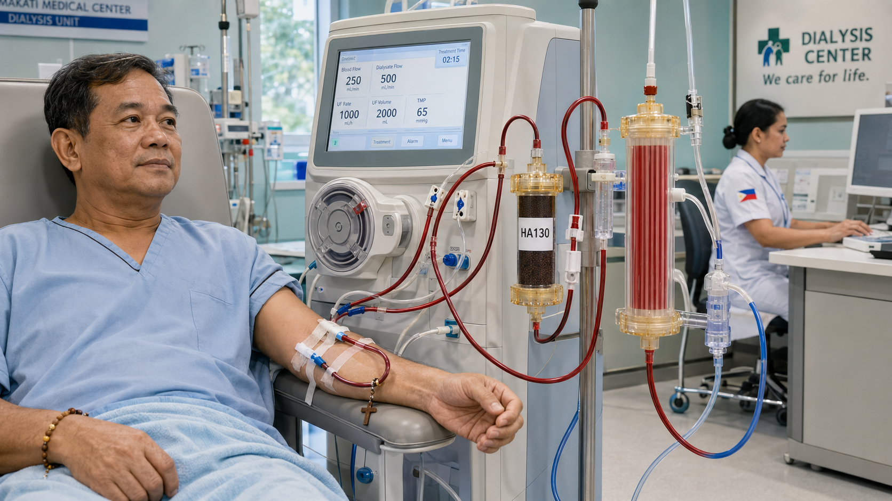

What Is Hemoperfusion?Ano ang Hemoperfusion?Unsa ang Hemoperfusion?Nanung ing Hemoperfusion?
Hemoperfusion passes your blood through a cartridge filled with adsorptive beads that trap specific molecules — then returns the cleaned blood to your body. Unlike hemodialysis, which filters waste through a semipermeable membrane using concentration gradients, hemoperfusion uses direct contact adsorption. The beads physically bind toxins, cytokines, and inflammatory mediators to their surface — capturing molecules that dialysis membranes cannot remove because they are too large, too protein-bound, or too lipophilic.Ang hemoperfusion ay nagpapasa ng iyong dugo sa pamamagitan ng isang cartridge na puno ng mga adsorptive bead na humuhuli ng mga partikular na molekula — pagkatapos ay ibinabalik ang nalinis na dugo sa iyong katawan. Hindi tulad ng hemodialysis na nagfi-filter ng basura sa pamamagitan ng semipermeable membrane gamit ang concentration gradients, gumagamit ang hemoperfusion ng direktang contact adsorption. Ang mga bead ay pisikal na nagbubuklod ng mga lason, cytokine, at mga inflammatory mediator sa kanilang ibabaw.Ang hemoperfusion nagpasa sa imong dugo pinaagi sa usa ka cartridge nga puno sa mga adsorptive bead nga nagbitik sa piho nga mga molekula — unya gibalik ang nahinloan nga dugo sa imong lawas. Dili sama sa hemodialysis nga nag-filter sa basura pinaagi sa semipermeable membrane, ang hemoperfusion naggamit og direktang contact adsorption. Ang mga bead pisikal nga nagbugkos sa mga hilo, cytokine, ug mga inflammatory mediator sa ilang ibabaw.Ing hemoperfusion nagpapasa ning dala mu king metung a cartridge a puno ning mga adsorptive beads a humuhuli ning mga tiyak a molekula — pagkatapos ibabalik ing nalinisang dala sa katawan mu. Hindi tulad ning hemodialysis a nagfi-filter ning basura king semipermeable membrane, gumagamit ing hemoperfusion ning direktang contact adsorption. Deng beads pisikal a nagbubuklod ning deng mga lason, cytokine, at inflammatory mediators sa kanilang ibabaw.

What hemoperfusion removesAno ang tinatanggal ng hemoperfusionUnsa ang gikuha sa hemoperfusionNanung tinatanggal ning hemoperfusion
Cytokines (IL-6, IL-1β, TNF-α) · Protein-bound uremic toxins (indoxyl sulfate, p-cresyl sulfate) · Beta-2 microglobulin (β2-MG) · Parathyroid hormone (PTH) · Endotoxins · Inflammatory mediators · Drugs and exogenous toxins · Advanced glycation end-products (AGEs)Mga cytokine (IL-6, IL-1β, TNF-α) · Mga protein-bound uremic toxin · Beta-2 microglobulin · Parathyroid hormone · Mga endotoxin · Mga inflammatory mediator · Mga gamot at panlabas na lason · Advanced glycation end-productsMga cytokine (IL-6, IL-1β, TNF-α) · Protein-bound uremic toxins · Beta-2 microglobulin · Parathyroid hormone · Mga endotoxin · Mga inflammatory mediator · Mga tambal ug exogenous toxins · Advanced glycation end-productsDeng cytokines (IL-6, IL-1β, TNF-α) · Deng protein-bound uremic toxins · Beta-2 microglobulin · Parathyroid hormone · Deng endotoxins · Deng inflammatory mediators · Deng gamot at exogenous toxins · Advanced glycation end-products
What HD alone cannot remove wellAno ang hindi mahusay na matatanggal ng HD lamangUnsa ang dili maayo nga makuha sa HD langNanung hindi mahusay a matatanggal ning HD lamang
Protein-bound toxins (tightly bound to albumin, can't cross membrane) · Cytokines (too large, molecular weight 15–25 kDa) · PTH (84 amino acids, too large for standard membranes) · Lipopolysaccharide (LPS) endotoxin · Bilirubin · Ammonia in liver failure · Drug-protein complexesMga protein-bound toxin (mahigpit na nakatali sa albumin) · Mga cytokine (masyadong malaki, 15–25 kDa) · PTH (84 amino acids, masyadong malaki) · LPS endotoxin · Bilirubin · Ammonia sa liver failure · Drug-protein complexesProtein-bound toxins (hugot nagtali sa albumin) · Mga cytokine (dako kaayo, 15–25 kDa) · PTH (84 amino acids, dako kaayo) · LPS endotoxin · Bilirubin · Ammonia sa liver failure · Drug-protein complexesDeng protein-bound toxins (mahigpit a nakatali sa albumin) · Deng cytokines (masyadong malaki, 15–25 kDa) · PTH (84 amino acids, masyadong malaki) · LPS endotoxin · Bilirubin · Ammonia king liver failure · Drug-protein complexes
Sepsis and Cytokine Storm — The Original IndicationSepsis at Cytokine Storm — Ang Orihinal na IndikasyonSepsis ug Cytokine Storm — Ang Orihinal nga IndikasyonSepsis at Cytokine Storm — Ing Orihinal a Indikasyon
In sepsis, the immune system releases a massive flood of cytokines — a dysregulated response that damages organs far from the original infection site. The kidneys, lungs, liver, and heart all suffer from the inflammatory storm, not directly from the bacteria. Hemoperfusion targets this cascade directly by removing the circulating cytokines before they reach distant organs.Sa sepsis, ang immune system ay naglalabas ng napakaraming cytokines — isang dysregulated na tugon na nagpapasama sa mga organo na malayo sa orihinal na lugar ng impeksyon. Ang mga bato, baga, atay, at puso ay nagdurusa mula sa inflammatory storm, hindi direkta mula sa bakterya. Tinutukoy ng hemoperfusion ang cascade na ito nang direkta sa pamamagitan ng pag-alis ng mga circulating cytokines bago maabot ang malalayong organo.Sa sepsis, ang immune system naglabas og dagkong baha sa mga cytokine — usa ka dysregulated nga tubag nga nagdaot sa mga organo nga layo sa orihinal nga dapit sa impeksyon. Ang mga kidney, baga, atay, ug kasingkasing nagantus gikan sa inflammatory storm, dili direkta gikan sa bakterya. Gipunting sa hemoperfusion kining cascade direkta pinaagi sa pagtangtang sa circulating cytokines una kini makaabut sa layong mga organo.King sepsis, ing immune system naglalabas ning napakaraming cytokines — metung a dysregulated a tugon a nagpapasama kareng organo a malayo king orihinal a lugar ning impeksyon. Deng batu, baga, atay, at puso nagdurusa mula king inflammatory storm, hindi direkta mula king bakterya. Tinutukoy ning hemoperfusion iting cascade nang direkta sa pamamagitan ning pag-alis ning deng circulating cytokines bago maabot deng malalayong organo.

Clinical evidence: HA330 in sepsisKlinikal na ebidensiya: HA330 sa sepsisKlinikal nga ebidensiya: HA330 sa sepsisKlinikal a ebidensiya: HA330 king sepsis
- Post-treatment reductions: IL-6 −69.6%, CRP −59.0%, Procalcitonin −70.4% in pediatric cytokine storm studiesMga pagbaba pagkatapos ng paggamot: IL-6 −69.6%, CRP −59.0%, Procalcitonin −70.4% sa mga pag-aaral ng pediatric cytokine stormMga pagkunhod pagkahuman sa pagtambal: IL-6 −69.6%, CRP −59.0%, Procalcitonin −70.4% sa pediatric cytokine storm nga mga pagtuonDeng pagbaba pagkatapos ning paggamot: IL-6 −69.6%, CRP −59.0%, Procalcitonin −70.4% king mga pediatric cytokine storm studies
- Significant improvement in organ failure scores (SOFA, PELOD-2) in multiple studiesMakabuluhang pagpapabuti sa mga organ failure score sa maraming pag-aaralMakabuluhang pagpauswag sa mga organ failure score sa daghang mga pagtuonMakabuluhang pagpapabuti king mga organ failure scores king maraming mga pag-aaral
- 87% survival in pediatric hemoadsorption series using HA330/38087% survival sa pediatric hemoadsorption series gamit ang HA330/38087% survival sa pediatric hemoadsorption series gamit ang HA330/38087% survival king pediatric hemoadsorption series gamit ing HA330/380
- Favorable evidence in COVID-19 cytokine storm, severe pancreatitis, ARDS, major trauma, and burnsPaborableng ebidensiya sa COVID-19 cytokine storm, matinding pancreatitis, ARDS, malaking trauma, at mga pasoPaborable nga ebidensiya sa COVID-19 cytokine storm, grabe nga pancreatitis, ARDS, dakong trauma, ug mga sunogPaborableng ebidensiya king COVID-19 cytokine storm, matinding pancreatitis, ARDS, malaking trauma, at deng mga paso
Important caveat: Antibiotic adsorptionMahalagang babala: Adsorption ng antibioticImportanteng pasidaan: Adsorption sa antibioticMahalagang babala: Antibiotic adsorption
The same resin that removes cytokines may also adsorb antibiotics from the blood — reducing their effective concentration at the time when infection control is most critical. Antibiotic dosing should be timed AFTER hemoperfusion sessions, or supplemental doses given. This is an under-studied but clinically important issue in sepsis management with hemoperfusion.Ang parehong resin na nag-aalis ng mga cytokine ay maaari ring mag-adsorb ng mga antibiotic mula sa dugo — nagbabawas ng kanilang epektibong konsentrasyon sa oras na pinaka-kritikal ang kontrol ng impeksyon. Ang dosing ng antibiotic ay dapat i-time PAGKATAPOS ng mga sesyon ng hemoperfusion, o kaya ay bigyan ng karagdagang dosis.Ang mao nga resin nga nagtangtang sa mga cytokine mahimong mag-adsorb usab sa mga antibiotic gikan sa dugo — nagkunhod sa ilang epektibong konsentrasyon sa panahon nga labing kritikal ang pagkontrol sa impeksyon. Ang pag-dose sa antibiotic kinahanglan i-time PAGKAHUMAN sa mga sesyon sa hemoperfusion, o hatagan og dugang nga dosis.Ing parehong resin a nag-aalis ning deng cytokines maaari dang mag-adsorb ning deng antibiotics mula king dala — nagbabawas ning kanilang epektibong konsentrasyon king oras a pinaka-kritikal ing kontrol ning impeksyon. Ing dosing ning antibiotic dapat i-time PAGKATAPOS ning deng sesyon ning hemoperfusion, o kaya bigyan ning karagdagang dosis.
Beyond Sepsis — The Growing Evidence BaseHigit sa Sepsis — Lumalaking Batayan ng EbidensiyaLapas sa Sepsis — Nagdako nga Pundasyon sa EbidensiyaHigit sa Sepsis — Lumalaking Batayan ning Ebidensiya
The original narrow indication for hemoperfusion was acute poisoning. Sepsis expanded it significantly. Now, advances in cartridge biocompatibility and a growing understanding of protein-bound uremic toxins are opening a third frontier — chronic complications of CKD and ESKD that standard dialysis fails to adequately address.Ang orihinal na makitid na indikasyon para sa hemoperfusion ay ang acute poisoning. Pinalawak ito nang malaki ng sepsis. Ngayon, ang mga pagsulong sa biocompatibility ng cartridge at lumalaking pag-unawa sa protein-bound uremic toxins ay nagbubukas ng ikatlong hangganan — ang mga kronikal na komplikasyon ng CKD at ESKD na hindi sapat na tinutugunan ng karaniwang dialysis.Ang orihinal nga makitid nga indikasyon para sa hemoperfusion ang acute poisoning. Gipadako kini nang dako sa sepsis. Karon, ang mga pag-uswag sa biocompatibility sa cartridge ug nagdako nga pagsabot sa protein-bound uremic toxins nagbukas sa ikatong utlanan — ang mga kroniko nga komplikasyon sa CKD ug ESKD nga dili igo nga gitubag sa naandan nga dialysis.Ing orihinal a makitid a indikasyon para sa hemoperfusion ing acute poisoning. Pinalawak ya iti nang malaki ning sepsis. Ngayon, deng mga pagsulong king biocompatibility ning cartridge at lumalaking pag-unawa king protein-bound uremic toxins nagbubukas ning ikatlong hangganan — deng kroniko a komplikasyon ning CKD at ESKD a hindi sapat a tinutugunan ning karaniwang dialysis.

CKD-Related PruritusCKD-Related PruritusCKD-Related PruritusCKD-Related Pruritus
Uremic pruritus is driven by accumulation of protein-bound toxins and inflammatory mediators that HD cannot remove. Hemoadsorption is the only extracorporeal technique shown to meaningfully reduce pruritus severity — especially when combined with high-flux HD. Evidence strength: moderate, growing.Ang uremic pruritus ay dulot ng akumulasyon ng protein-bound toxins at inflammatory mediators na hindi matatanggal ng HD. Ang hemoadsorption ang tanging extracorporeal technique na nagpapababa ng kalubhaan ng pruritus — lalo na kapag pinagsama sa high-flux HD. Lakas ng ebidensiya: katamtaman, lumalaki.Ang uremic pruritus gipahinabo sa akumulasyon sa protein-bound toxins ug inflammatory mediators nga dili makuha sa HD. Ang hemoadsorption mao lang ang extracorporeal technique nga nagpababa sa kabug-at sa pruritus — labi na kon gikatimbang sa high-flux HD. Kusog sa ebidensiya: katamtaman, nagdako.Ing uremic pruritus dulot ning akumulasyon ning protein-bound toxins at inflammatory mediators a hindi matatanggal ning HD. Ing hemoadsorption ing tanging extracorporeal technique a nagpapababa ning kalubhaan ning pruritus — lalu na nung pinagsama sa high-flux HD.
Refractory Hypertension in ESKDRefractory Hypertension sa ESKDRefractory Hypertension sa ESKDRefractory Hypertension king ESKD
Vasopressor substances (renin fragments, sympathomimetic uremic toxins) contribute to HD-resistant hypertension. HA130 is specifically indicated for this — adsorbing the vasoactive molecules that multiple antihypertensive drugs fail to control. Clinical studies show BP reduction after HPHD sessions.Ang mga vasopressor na sangkap (renin fragments, sympathomimetic uremic toxins) ay nag-aambag sa HD-resistant hypertension. Ang HA130 ay espesipikong idininisenyo para dito — naag-adsorb ng mga vasoactive molecule na hindi makontrol ng maraming antihypertensive na gamot.Ang mga vasopressor nga sangkap (renin fragments, sympathomimetic uremic toxins) nagamot sa HD-resistant hypertension. Ang HA130 espesipiko nga gidisenyo para niini — nag-adsorb sa vasoactive molecules nga dili makontrol sa daghang antihypertensive.Deng mga vasopressor a sangkap (renin fragments, sympathomimetic uremic toxins) nag-aambag sa HD-resistant hypertension. Ing HA130 espesipiko a inidisenyo para diti — nag-a-adsorb ning deng vasoactive molecules a hindi makontrol ning maraming antihypertensive.
Secondary HyperparathyroidismSecondary HyperparathyroidismSecondary HyperparathyroidismSecondary Hyperparathyroidism
PTH (molecular weight 9,425 Da) is incompletely removed by standard HD membranes. Hemoperfusion with HA130 significantly enhances PTH clearance — supplementing cinacalcet or active Vitamin D therapy in patients with inadequately controlled secondary HPT.Ang PTH (molecular weight 9,425 Da) ay hindi ganap na natatanggal ng karaniwang HD membranes. Ang hemoperfusion gamit ang HA130 ay makabuluhang nagpapalakas ng PTH clearance — nagdadagdag sa cinacalcet o active Vitamin D therapy sa mga pasyenteng may hindi sapat na kontroladong secondary HPT.Ang PTH (molecular weight 9,425 Da) dili hingpit nga natangtang sa naandan nga HD membranes. Ang hemoperfusion gamit ang HA130 makabuluhang nagpataas sa PTH clearance — nagdugang sa cinacalcet o active Vitamin D therapy.Ing PTH (molecular weight 9,425 Da) hindi ganap a natatanggal ning karaniwang HD membranes. Ing hemoperfusion gamit ing HA130 makabuluhang nagpapalakas ning PTH clearance — nagdadagdag sa cinacalcet o active Vitamin D therapy.
Acute Liver Failure / Hepatic EncephalopathyAcute Liver Failure / Hepatic EncephalopathyAcute Liver Failure / Hepatic EncephalopathyAcute Liver Failure / Hepatic Encephalopathy
The failing liver cannot clear bilirubin, ammonia, bile acids, and aromatic amino acids — all protein-bound, all dialysis-resistant. Hemoperfusion is used as a bridge to liver transplant or recovery, reducing encephalopathy burden. Often combined with plasmapheresis in DPMAS protocols.Ang nabigong atay ay hindi makaalis ng bilirubin, ammonia, bile acids, at aromatic amino acids — lahat protein-bound, lahat dialysis-resistant. Ginagamit ang hemoperfusion bilang tulay sa liver transplant o paggaling.Ang napakyas nga atay dili makatangtang sa bilirubin, ammonia, bile acids, ug aromatic amino acids — tanan protein-bound, tanan dialysis-resistant. Ang hemoperfusion gigamit isip tulay sa liver transplant o pagayo.Ing nabigang atay hindi makaalis ning bilirubin, ammonia, bile acids, at aromatic amino acids — lahat protein-bound, lahat dialysis-resistant. Ginagamit ing hemoperfusion bilang tulay sa liver transplant o paggaling.
Drug Overdose / PoisoningDrug Overdose / PagkalasonDrug Overdose / PagkalasonDrug Overdose / Pagkalason
The original indication. HA230 is specifically designed for poisoning — pesticides (organophosphates), rodenticides (brodifacoum), drug overdoses (theophylline, phenobarbital, carbamazepine, digoxin). Faster and more effective than HD alone for highly protein-bound or lipophilic drugs.Ang orihinal na indikasyon. Ang HA230 ay espesipikong dinisenyo para sa pagkalason — mga pesticide (organophosphate), rodenticide, drug overdose (theophylline, phenobarbital, carbamazepine, digoxin). Mas mabilis at mas epektibo kaysa HD lamang para sa highly protein-bound o lipophilic na gamot.Ang orihinal nga indikasyon. Ang HA230 espesipiko nga gidisenyo para sa pagkalason — mga pesticide (organophosphate), rodenticide, drug overdose (theophylline, phenobarbital, carbamazepine, digoxin). Mas paspas ug mas epektibo kaysa HD lang.Ing orihinal a indikasyon. Ing HA230 espesipiko a inidisenyo para sa pagkalason — deng mga pesticide (organophosphates), rodenticides, drug overdoses. Mas mabilis at mas epektibo kaysa HD lamang.
CKD Cardiovascular ComplicationsCardiovascular Complications ng CKDCardiovascular Complications sa CKDCardiovascular Complications ning CKD
Protein-bound toxins (indoxyl sulfate, p-cresyl sulfate) are directly cardiotoxic — promoting endothelial dysfunction, vascular calcification, and myocardial fibrosis. Regular HPHD sessions using HA130 can reduce these toxin levels, potentially slowing CKD-related cardiovascular progression.Ang mga protein-bound toxin (indoxyl sulfate, p-cresyl sulfate) ay direktang nakakalason sa puso — nagtataguyod ng endothelial dysfunction, vascular calcification, at myocardial fibrosis. Ang regular na HPHD sessions gamit ang HA130 ay maaaring magbawas ng antas ng mga toxin na ito.Ang mga protein-bound toxin (indoxyl sulfate, p-cresyl sulfate) direktang makahilo sa kasingkasing — nagsuporta sa endothelial dysfunction, vascular calcification, ug myocardial fibrosis. Ang regular nga HPHD sessions gamit ang HA130 mahimong magpababa niining mga lebel sa toxin.Deng protein-bound toxins (indoxyl sulfate, p-cresyl sulfate) direktang nakakalason king puso — nagtataguyod ning endothelial dysfunction, vascular calcification, at myocardial fibrosis. Deng regular a HPHD sessions gamit ing HA130 maaaring magbawas ning deng antas ning mga toxin na iti.
Hemoperfusion Cartridges Available in the PhilippinesMga Hemoperfusion Cartridge na Makukuha sa PilipinasMga Hemoperfusion Cartridge nga Makuha sa PilipinasDeng Hemoperfusion Cartridge a Makukuha king Pilipinas
Jafron HA130 vs HA330 — Core ComparisonJafron HA130 vs HA330 — Pangunahing PaghahambingJafron HA130 vs HA330 — Panguna nga PagtandiJafron HA130 vs HA330 — Pangunahing Paghambing
Optimized for middle molecules and protein-bound uremic toxins (β2-MG, PTH, indoxyl sulfate, p-cresyl sulfate, leptin)Na-optimize para sa mga middle molecule at protein-bound uremic toxins (β2-MG, PTH, indoxyl sulfate, p-cresyl sulfate, leptin)Na-optimize para sa mga middle molecule ug protein-bound uremic toxinsNa-optimize para sa deng middle molecules at protein-bound uremic toxins
Wider range capturing large cytokines (IL-6, TNF-α, IL-1β, HMGB-1) and complement factors that HA130 missesMas malawak na saklaw na kumukuha ng malalaking cytokine (IL-6, TNF-α, IL-1β, HMGB-1) at complement factors na hindi nakukuha ng HA130Mas lapad nga saklaw nga nagbitik sa dagkong cytokines (IL-6, TNF-α, IL-1β, HMGB-1) ug complement factors nga gisayup sa HA130Mas malawak a saklaw a kumukuha ning malaking cytokines (IL-6, TNF-α, IL-1β, HMGB-1) at complement factors a hindi nakukuha ning HA130
Smaller volume — suitable for routine HD sessions, lower extracorporeal blood volumeMas maliit na dami — angkop para sa routine HD sessions, mas mababang extracorporeal blood volumeGamay nga gidaghanon — angay sa routine HD sessionsMas maliit a dami — angkop para sa routine HD sessions
Larger volume — greater adsorption capacity for acute high-load inflammatory states. Session duration typically 4 hours.Mas malaking dami — mas malaking kapasidad ng adsorption para sa acute high-load inflammatory states. Karaniwang tagal ng sesyon ay 4 na oras.Mas dakog gidaghanon — mas dakong kapasidad sa adsorption para sa acute high-load inflammatory states. Kasagarang 4 ka oras ang sesyon.Mas malaking dami — mas malaking kapasidad ning adsorption para sa acute high-load inflammatory states. Karaniwan 4 oras ing sesyon.
• Uremic pruritus
• Refractory hypertension
• Secondary hyperparathyroidism
• CKD cardiovascular complications
• Renal osteodystrophy
• Uremic malnutrition / inflammation• ESKD na may kronikong HD — routine sessions
• Uremic pruritus
• Refractory hypertension
• Secondary hyperparathyroidism
• CKD cardiovascular complications
• Renal osteodystrophy
• Uremic malnutrition / inflammation• ESKD sa kroniko nga HD — routine sessions
• Uremic pruritus
• Refractory hypertension
• Secondary hyperparathyroidism
• CKD cardiovascular complications• ESKD king kroniko a HD — routine sessions
• Uremic pruritus
• Refractory hypertension
• Secondary hyperparathyroidism
• CKD cardiovascular complications
• Severe COVID-19 cytokine storm
• ARDS
• Severe acute pancreatitis
• Major trauma / burns
• CAR-T cell cytokine release syndrome
• Hemophagocytic lymphohistiocytosis
• Sepsis-associated AKI• Sepsis / septic shock
• Matinding COVID-19 cytokine storm
• ARDS
• Matinding acute pancreatitis
• Malaking trauma / paso
• CAR-T cytokine release syndrome
• Hemophagocytic lymphohistiocytosis
• Sepsis-associated AKI• Sepsis / septic shock
• Grabe nga COVID-19 cytokine storm
• ARDS
• Grabe nga acute pancreatitis
• Dakong trauma / sunog
• CAR-T cytokine release syndrome• Sepsis / septic shock
• Matinding COVID-19 cytokine storm
• ARDS
• Matinding acute pancreatitis
• Malaking trauma / paso
Lower cost — more accessible for chronic/maintenance useMas mababang gastos — mas accessible para sa kronikong paggamitMas ubos nga gastos — mas accessible para sa kroniko nga paggamitMas mababang gastos — mas accessible para sa kroniko a paggamit
Higher cost reflects larger volume and ICU-grade adsorption capacityMas mataas na gastos dahil sa mas malaking dami at ICU-grade adsorption capacityMas taas nga gastos tungod sa mas dakog gidaghanon ug ICU-grade adsorption capacityMas mataas a gastos dahil sa mas malaking dami at ICU-grade adsorption capacity

Other Cartridges Available in Philippine Tertiary CentersIba Pang Cartridge na Makukuha sa mga Tertiary Center ng PilipinasUbang mga Cartridge nga Makuha sa mga Tertiary Center sa PilipinasDeng Ibang Cartridge a Makukuha king mga Tertiary Center ning Pilipinas
Jafron cartridges (HA130, HA230, HA330, HA380) are the most consistently available in the Philippines through local medical device distributors. CytoSorb and Toraymyxin require import coordination — typically 1–2 weeks lead time. Lixelle is the hardest to source and is rarely used outside Japan. For acute poisoning emergencies, contact your hospital pharmacy and the Philippine Poison Control Center; HA230 or HA330 can be mobilized faster than other brands. None of these cartridges are currently reimbursed under PhilHealth.Ang mga Jafron cartridge (HA130, HA230, HA330, HA380) ang pinaka-consistently available sa Pilipinas. Ang CytoSorb at Toraymyxin ay nangangailangan ng import coordination — karaniwang 1–2 linggo ang lead time. Ang Lixelle ay pinakamahirap hanapin. Para sa acute poisoning, makipag-ugnayan sa Philippine Poison Control Center. Wala sa mga cartridge na ito ang kasalukuyang nire-reimburse ng PhilHealth.Ang mga Jafron cartridge (HA130, HA230, HA330, HA380) ang pinaka-consistently available sa Pilipinas. Ang CytoSorb ug Toraymyxin nanginahanglan og import coordination — kasagaran 1–2 semana ang lead time. Ang Lixelle pinakamahirap makita. Para sa acute poisoning, makigkontak sa Philippine Poison Control Center. Wala sa niini nga mga cartridge ang karon gi-reimburse sa PhilHealth.Deng Jafron cartridge (HA130, HA230, HA330, HA380) ing pinaka-consistently available king Pilipinas. Ing CytoSorb at Toraymyxin kailangan ning import coordination — karaniwan 1–2 linggo ing lead time. Ing Lixelle pinakamahirap mahanap. Para sa acute poisoning, makipag-ugnayan sa Philippine Poison Control Center. Wala sa dening mga cartridge ing kasalukuyang nire-reimburse ning PhilHealth.
HPHD — How Hemoperfusion + Hemodialysis Works TogetherHPHD — Paano Gumagana ang Hemoperfusion + Hemodialysis Nang MagkasamaHPHD — Unsaon Pagtrabaho ang Hemoperfusion + Hemodialysis MagkaubanHPHD — Panung Gumagana Ing Hemoperfusion + Hemodialysis Nang Magkasama
In combined hemoperfusion-hemodialysis (HPHD), the hemoperfusion cartridge is placed in series with the dialysis circuit — blood passes through the HP cartridge first (adsorption of large molecules), then through the HD dialyzer (removal of small molecules and fluid). This single-circuit approach maximizes removal across the full molecular weight spectrum while adding only modest complexity to the standard HD setup.Sa combined hemoperfusion-hemodialysis (HPHD), ang hemoperfusion cartridge ay inilalagay nang in series sa dialysis circuit — ang dugo ay dumadaan muna sa HP cartridge (adsorption ng malalaking molekula), pagkatapos ay sa HD dialyzer (pag-aalis ng maliliit na molekula at likido). Ang single-circuit approach na ito ay nagmaximize ng pag-aalis sa buong molecular weight spectrum.Sa combined hemoperfusion-hemodialysis (HPHD), ang hemoperfusion cartridge gibutang in series uban sa dialysis circuit — ang dugo moagi una sa HP cartridge (adsorption sa dagkong molekula), unya sa HD dialyzer (pagtangtang sa gagmay nga molekula ug likido). Kining single-circuit approach nagmaximize sa pagtangtang sa tibuok molecular weight spectrum.King combined hemoperfusion-hemodialysis (HPHD), ing hemoperfusion cartridge inilalagay nang in series sa dialysis circuit — ing dala dumadaan muna king HP cartridge (adsorption ning malaking molekula), pagkatapos sa HD dialyzer (pag-alis ning maliliit a molekula at likido). Iting single-circuit approach nagmaximize ning pag-alis sa buong molecular weight spectrum.

Setup — cartridge placementSetup — paglalagay ng cartridgeSetup — pagbutang sa cartridgeSetup — paglalagay ning cartridge
HP cartridge connected in series BEFORE the HD dialyzer in the arterial blood line. Primed with 500–1000 mL normal saline + heparin. Blood flow rate: 150–250 mL/min (slower than standard HD to optimize contact time with resin beads).HP cartridge na konektado in series BAGO ang HD dialyzer sa arterial blood line. I-prime ng 500–1000 mL normal saline + heparin. Blood flow rate: 150–250 mL/min (mas mabagal kaysa karaniwang HD para ma-optimize ang contact time sa resin beads).HP cartridge gikonekta in series BAGO ang HD dialyzer sa arterial blood line. I-prime og 500–1000 mL normal saline + heparin. Blood flow rate: 150–250 mL/min (mas hinay kaysa naandan nga HD aron ma-optimize ang contact time sa resin beads).HP cartridge konektado in series BAGO ing HD dialyzer king arterial blood line. I-prime ning 500–1000 mL normal saline + heparin. Blood flow rate: 150–250 mL/min.
AnticoagulationAnticoagulationAnticoagulationAnticoagulation
Heparin required — slightly higher than standard HD due to added extracorporeal volume. Loading dose 2,000–3,000 IU then maintenance infusion. Citrate anticoagulation is an alternative for high bleeding-risk patients (AKI, post-surgery). Monitor ACT or APTT during session.Kailangan ang heparin — bahagyang mas mataas kaysa karaniwang HD dahil sa karagdagang extracorporeal volume. Loading dose 2,000–3,000 IU pagkatapos ay maintenance infusion. Ang citrate anticoagulation ay alternatibo para sa mga pasyenteng may mataas na panganib ng pagdurugo.Gikinahanglan ang heparin — gamay lang nga mas taas kaysa naandan nga HD tungod sa dugang nga extracorporeal volume. Loading dose 2,000–3,000 IU unya maintenance infusion. Ang citrate anticoagulation alternatibo para sa mga pasyente nga taas ang risgo sa pagdugo.Kailangan ing heparin — bahagyang mas mataas kaysa karaniwang HD dahil sa karagdagang extracorporeal volume. Loading dose 2,000–3,000 IU pagkatapos maintenance infusion.
Session duration and cartridge saturationTagal ng sesyon at saturation ng cartridgeTagal sa sesyon ug saturation sa cartridgeTagal ning sesyon at saturation ning cartridge
Cartridge saturates within 2–4 hours as adsorption sites fill. HA130: replace or discontinue at 2–3 hours into the session, then continue HD alone for the remainder. HA330: typically used for a full 4-hour session. Using the cartridge beyond saturation provides no additional benefit.Ang cartridge ay nasasaturate sa loob ng 2–4 oras habang nailalagay ang mga adsorption sites. HA130: palitan o itigil sa 2–3 oras ng sesyon, pagkatapos ay ipagpatuloy ang HD lamang. HA330: karaniwang ginagamit para sa buong 4 na oras na sesyon. Ang paggamit ng cartridge higit sa saturation ay hindi nagbibigay ng karagdagang benepisyo.Ang cartridge nasaturate sulod sa 2–4 ka oras samtang napuno ang mga adsorption sites. HA130: ilisan o ihunong sa 2–3 ka oras sa sesyon, unya ipadayon ang HD lang. HA330: kasagaran gigamit para sa tibuok 4 ka oras nga sesyon.Ing cartridge nasasaturate sulod ning 2–4 oras. HA130: palitan o itigil sa 2–3 oras ning sesyon, pagkatapos ipagpatuloy ing HD lamang. HA330: karaniwan ginagamit para sa buong 4 oras a sesyon.
Antibiotic timing (critical in sepsis)Timing ng antibiotic (kritikal sa sepsis)Timing sa antibiotic (kritikal sa sepsis)Timing ning antibiotic (kritikal king sepsis)
Administer antibiotics AFTER the hemoperfusion session ends — not during. If not possible, give a supplemental post-HP dose. Priority: infection control must not be compromised by cytokine clearance. Document all medication timing in the nursing notes.Ibigay ang mga antibiotic PAGKATAPOS matapos ang hemoperfusion session — hindi sa panahon ng. Kung hindi posible, magbigay ng karagdagang post-HP dose. Priyoridad: hindi dapat makompromiso ang kontrol ng impeksyon.Hatagi og mga antibiotic PAGKAHUMAN sa hemoperfusion session — dili sa panahon sa. Kon dili mahimo, hatagan og supplemental post-HP dose. Priyoridad: dili angayan makompromiso ang kontrol sa impeksyon.Ibigay deng antibiotics PAGKATAPOS matapos ing hemoperfusion session — hindi king panahon ning. Nung hindi posible, magbigay ning supplemental post-HP dose.
Cost-Effectiveness — An Honest AssessmentCost-Effectiveness — Isang Tapat na PagsusuriCost-Effectiveness — Usa ka Tapat nga PagsusiCost-Effectiveness — Metung a Tapat a Pagsusuri
Hemoperfusion's cost-effectiveness depends entirely on the indication. For acute, life-threatening conditions where it prevents ICU days and organ failure, the math is strongly favorable. For chronic maintenance use, the calculus is more nuanced — and honest patient counseling is essential.Ang cost-effectiveness ng hemoperfusion ay ganap na nakasalalay sa indikasyon. Para sa mga acute, nagbabantang buhay na kondisyon kung saan pinipigilan nito ang mga araw sa ICU at organ failure, ang kalkulasyon ay lubos na paborable. Para sa kronikong maintenance use, ang kalkulasyon ay mas nuanced.Ang cost-effectiveness sa hemoperfusion hingpit nga nagdepende sa indikasyon. Para sa acute, nagbabantang kinabuhi nga mga kondisyon nga gilikayan niini ang mga adlaw sa ICU ug organ failure, ang kalkulasyon kusog nga paborable. Para sa kroniko nga maintenance use, ang kalkulasyon mas nuanced.Ing cost-effectiveness ning hemoperfusion ganap a nakasalalay king indikasyon. Para sa acute, nagbabantang buhay a mga kondisyon a pinipigilan niti deng ICU days at organ failure, ing kalkulasyon lubos a paborable. Para sa kroniko a maintenance use, ing kalkulasyon mas nuanced.
| ItemItemItemItem | HA130 (Chronic HPHD)HA130 (Kronikong HPHD)HA130 (Kroniko nga HPHD)HA130 (Kroniko a HPHD) | HA330 (Acute/Sepsis)HA330 (Acute/Sepsis)HA330 (Acute/Sepsis)HA330 (Acute/Sepsis) |
|---|---|---|
| Cartridge cost (PH market)Gastos ng cartridge (merkado ng PH)Gastos sa cartridge (merkado sa PH)Gastos ning cartridge (merkado ning PH) | ₱8,000–15,000 | ₱24,000–35,000 |
| Sessions per courseMga sesyon bawat kursoMga sesyon matag kursoMga sesyon bawat kurso | 1–2× per week, ongoing1–2× bawat linggo, patuloy1–2× matag semana, padayon1–2× bawat linggo, patuloy | 1–3 sessions total (acute course)1–3 sessions sa kabuuan (acute course)1–3 sessions sa kabuuan (acute course)1–3 sessions sa kabuuan (acute course) |
| Monthly cartridge costBuwanang gastos ng cartridgeBuwanang gastos sa cartridgeBuwanang gastos ning cartridge | ₱32,000–120,000/month | ₱24,000–105,000 (one-time course) |
| PhilHealth coverage | Limited / case-by-caseLimitado / kaso-kasoLimitado / kaso-kasoLimitado / kaso-kaso | ICU Z-package may partially coverAng ICU Z-package ay maaaring bahagyang sumasaklawAng ICU Z-package mahimong bahagyang mosakopIng ICU Z-package maaaring bahagyang sumasaklaw |
| Compared to: ICU day costKumpara sa: Gastos ng isang araw sa ICUKumpara sa: Gastos sa usa ka adlaw sa ICUKumpara sa: Gastos ning isang araw king ICU | — | ₱15,000–40,000/day (PH private hospital). 2–3 sessions may prevent 5–10 additional ICU days.₱15,000–40,000/araw (pribadong ospital ng PH). Ang 2–3 sessions ay maaaring maiwasan ang 5–10 karagdagang araw sa ICU.₱15,000–40,000/adlaw (pribadong ospital sa PH). Ang 2–3 sessions mahimong malikayan ang 5–10 dugang nga adlaw sa ICU.₱15,000–40,000/araw (pribadong ospital ning PH). 2–3 sessions maaaring maiwasan ning 5–10 karagdagang araw king ICU. |
✅ Cost-effective scenariosMga cost-effective na sitwasyonMga cost-effective nga sitwasyonDeng cost-effective a sitwasyon
Sepsis / cytokine storm: 2–3 HA330 sessions (₱48,000–105,000 total) vs. potential 5–10 additional ICU days (₱75,000–400,000). Net saving: significant. Evidence for reduced organ failure and ICU stay is growing.
Acute poisoning: 1–2 sessions prevent dialysis-resistant toxin accumulation, ICU admission, or permanent organ damage. ROI strongly positive.
Refractory uremic pruritus (HA130): If pruritus is causing insomnia, depression, and hospital admissions, the QoL benefit per ₱ spent is high — especially if it reduces antipruritic drug costs.Sepsis / cytokine storm: 2–3 HA330 sessions (₱48,000–105,000 kabuuan) vs. posibleng 5–10 karagdagang araw sa ICU (₱75,000–400,000). Makabuluhang pagtitipid.
Acute poisoning: 1–2 sessions ang pumipigil ng dialysis-resistant toxin accumulation. Positibong ROI.
Refractory uremic pruritus (HA130): Mataas na QoL benefit bawat perang ginastos.Sepsis / cytokine storm: 2–3 HA330 sessions (₱48,000–105,000 kabuuan) vs. mahimong 5–10 dugang nga adlaw sa ICU. Makabuluhang katipidan.
Acute poisoning: 1–2 sessions nagpugong sa dialysis-resistant toxin accumulation. Positibong ROI.
Refractory uremic pruritus (HA130): Taas nga QoL benefit matag peso nga gigastos.Sepsis / cytokine storm: 2–3 HA330 sessions vs. posibleng 5–10 karagdagang araw king ICU. Makabuluhang pagtitipid.
Acute poisoning: 1–2 sessions nagpipigil ning dialysis-resistant toxin accumulation. Positibong ROI.
Refractory uremic pruritus (HA130): Mataas a QoL benefit bawat piso a ginagastos.
⚠️ Less cost-effective / unclear scenariosMas mababang cost-effectiveness / hindi malinaw na mga sitwasyonMas ubos nga cost-effectiveness / dili klaro nga mga sitwasyonMas mababang cost-effectiveness / hindi malinaw a mga sitwasyon
Routine chronic HPHD (HA130): ₱32,000–120,000/month adds up to ₱384,000–1.44M/year on top of standard HD costs. The benefit in terms of mortality reduction is not yet proven in RCTs. Benefit for pruritus and BP control is clearer.
HA330 in non-responsive sepsis: If initiated too late (>48 hours of cytokine storm), cartridge adsorbs a smaller fraction of already-distributed mediators. Timing matters critically.
Without clear patient selection: Using HA330 empirically in all septic patients without stratifying by inflammatory load is wasteful. IL-6 >500 pg/mL and SOFA score ≥6 are reasonable selection criteria.Routine chronic HPHD (HA130): ₱32,000–120,000/buwan nagdadagdag sa ₱384,000–1.44M/taon. Ang benepisyo sa pagbabawas ng mortality ay hindi pa napatunayan sa mga RCT.
HA330 sa hindi sumasagot na sepsis: Kung sinimulan nang huli, mas maliit na bahagi ng mediators ang naaabsorb.
Walang malinaw na patient selection: Ang paggamit ng HA330 nang empirikal sa lahat ng septic na pasyente nang walang stratification ay mapagsayang.Routine chronic HPHD (HA130): ₱32,000–120,000/buwan nagdugang sa ₱384,000–1.44M/tuig. Ang benepisyo sa pagpababa sa mortality wala pa mapamatud-an sa mga RCT.
HA330 sa dili motubag nga sepsis: Kon gisugdan nga ulahi, mas gamay nga bahin sa mga mediator ang naabsorb.
Walay klaro nga patient selection: Ang paggamit sa HA330 empirically sa tanan nga septic nga pasyente mapaanugon.Routine chronic HPHD (HA130): ₱32,000–120,000/bulan nagdadagdag sa ₱384,000–1.44M/taon. Ing benepisyo king pagbabawas ning mortality hindi pa napatunayan king mga RCT.
HA330 king hindi sumasagot a sepsis: Nung sinimulan nang huli, mas maliit a bahagi ning mediators ing naabsorb.
Walang malinaw a patient selection: Ang paggamit ning HA330 empirically king lahat a septic a pasyente mapagsayang.
DSWD Financial Assistance — Helande Kidney Care Partnership (Active as of 2025)Tulong Pinansyal ng DSWD — Pakikipagtulungan ng Helande Kidney Care (Aktibo simula 2025)Pinansyal nga Tabang sa DSWD — Pakigtambayayong sa Helande Kidney Care (Aktibo sukad 2025)Tulong Pinansyal ning DSWD — Pakikipagtulungan ning Helande Kidney Care (Aktibo mula 2025)
Helande Kidney Care, Inc. — the local distributor of Jafron hemoperfusion cartridges in the Philippines — has a formal Memorandum of Agreement (MOA) with the DSWD Crisis Intervention Division (PMB-CID) to financially subsidize hemoperfusion costs for indigent and financially distressed patients. This is a significant access pathway that many patients and physicians are unaware of.
How to access:
1. Patient or family submits a financial assistance request to any DSWD office (walk-in or referral from hospital social worker)
2. DSWD Crisis Intervention Division assesses financial capacity and medical need
3. Upon approval, DSWD coordinates with Helande Kidney Care for cartridge subsidy
4. Hospital social workers play a key role — always loop in the MSW early
Contact: Helande Kidney Care, Inc. · 3rd Floor Jafer Bldg., 118 West Ave., Quezon City · Tel: 4927-9516 · recranding@helande.ph
DSWD AICS: aics.dswd.gov.ph · Hotline: 8888
Ang Helande Kidney Care, Inc. — ang lokal na distributor ng Jafron hemoperfusion cartridges sa Pilipinas — ay may pormal na Memorandum of Agreement (MOA) sa DSWD Crisis Intervention Division (PMB-CID) para sa pinansyal na subsidy ng gastos ng hemoperfusion para sa mga indigent at nangangailangan na pasyente.
Paano ma-access:
1. Ang pasyente o pamilya ay nagsusumite ng kahilingan para sa tulong pinansyal sa anumang DSWD office
2. Sinusuri ng DSWD Crisis Intervention Division ang kakayahang pinansyal at medikal na pangangailangan
3. Sa pag-apruba, nakikipag-ugnayan ang DSWD sa Helande Kidney Care para sa cartridge subsidy
4. Palaging isali ang hospital social worker nang maaga
Makipag-ugnayan: Helande Kidney Care, Inc. · Tel: 4927-9516 · recranding@helande.ph
DSWD AICS: aics.dswd.gov.ph · Hotline: 8888
Ang Helande Kidney Care, Inc. — ang lokal nga distributor sa Jafron hemoperfusion cartridges sa Pilipinas — adunay pormal nga Memorandum of Agreement (MOA) sa DSWD Crisis Intervention Division aron pinansyal nga i-subsidize ang mga gastos sa hemoperfusion para sa mga indigent ug nanginahanglan nga pasyente.
Unsaon pag-access:
1. Ang pasyente o pamilya nagsumite og kahilingan sa bisan unsang DSWD office
2. Ang DSWD Crisis Intervention Division nagsusi sa pinansyal nga kakayahan ug medikal nga panginahanglan
3. Sa pag-apruba, nakigtambayayong ang DSWD sa Helande Kidney Care para sa cartridge subsidy
4. Kanunay i-loop in ang hospital social worker sa sayo
Kontak: Helande Kidney Care, Inc. · Tel: 4927-9516 · recranding@helande.ph
DSWD AICS: aics.dswd.gov.ph · Hotline: 8888
Ing Helande Kidney Care, Inc. — ing lokal a distributor ning Jafron hemoperfusion cartridges king Pilipinas — maki pormal a Memorandum of Agreement (MOA) sa DSWD Crisis Intervention Division para sa pinansyal a subsidy ning gastos ning hemoperfusion para kareng indigent at nangangailangang pasyente.
Panung ma-access:
1. Ing pasyente o pamilya nagsusumite ning kahilingan sa anyang DSWD office
2. Ing DSWD Crisis Intervention Division sumusuri ning pinansyal a kakayahan at medikal a pangangailangan
3. Sa pag-apruba, nakikipag-ugnayan ing DSWD sa Helande Kidney Care para sa cartridge subsidy
4. Lagi isali ing hospital social worker nang maaga
Makipag-ugnayan: Helande Kidney Care, Inc. · Tel: 4927-9516 · recranding@helande.ph
DSWD AICS: aics.dswd.gov.ph · Hotline: 8888
PhilHealth coverage pathwayLandas ng saklaw ng PhilHealthAgianan sa sakop sa PhilHealthLandas ning saklaw ning PhilHealth
Hemoperfusion cartridges are not separately reimbursed under PhilHealth's standard HD benefit. For ICU-admitted patients, the Z-package (severe and life-threatening) may partially cover consumables. Advocacy for inclusion in the HD Z-benefit package continues. Document indication, clinical justification, and laboratory evidence in the chart for HMO and PhilHealth claims. For indigent patients, pursue the DSWD–Helande pathway above first — it is more accessible and faster than PhilHealth reimbursement for this specific therapy.Ang mga hemoperfusion cartridge ay hindi hiwalay na nirerimburso sa ilalim ng karaniwang HD benefit ng PhilHealth. Para sa mga pasyenteng na-admit sa ICU, ang Z-package ay maaaring bahagyang sumasaklaw sa mga consumable. Para sa mga indigent na pasyente, unahin ang DSWD–Helande pathway sa itaas — ito ay mas accessible at mas mabilis kaysa sa PhilHealth reimbursement para sa therapy na ito.Ang mga hemoperfusion cartridge dili hiwalay nga gi-reimburso sa ilalim sa naandan nga HD benefit sa PhilHealth. Para sa mga pasyente nga na-admit sa ICU, ang Z-package mahimong bahagyang mosakop. Para sa mga indigent nga pasyente, unahon ang DSWD–Helande pathway sa ibabaw — kini mas accessible ug mas paspas kaysa sa PhilHealth reimbursement para niining piho nga therapy.Deng hemoperfusion cartridges hindi hiwalay a nirerimburso sa ilalim ning karaniwang HD benefit ning PhilHealth. Para sa mga pasyenteng na-admit king ICU, ing Z-package maaaring bahagyang sumasaklaw ning mga consumables. Para kareng indigent a pasyente, unahin ing DSWD–Helande pathway sa ibabaw — iti mas accessible at mas mabilis kaysa sa PhilHealth reimbursement para sa therapy na iti.
Who Benefits Most — Patient Selection CriteriaSino ang Pinaka-nakinabang — Pamantayan sa Pagpili ng PasyenteKinsa ang Labing Nakabenepisyo — Pamantayan sa Pagpili sa PasyenteSino ing Pinaka-nakinabang — Pamantayan king Pagpili ning Pasyente
| IndicationIndikasyonIndikasyonIndikasyon | Ideal PatientIdeal na PasyenteIdeal nga PasyenteIdeal a Pasyente | Cartridge | TimingTimingTimingTiming |
|---|---|---|---|
| Septic shock + AKISeptic shock + AKISeptic shock + AKISeptic shock + AKI | SOFA ≥6, IL-6 >500 pg/mL, vasopressor-dependent, within 24–48h of sepsis onsetSOFA ≥6, IL-6 >500 pg/mL, vasopressor-dependent, sa loob ng 24–48h ng sepsis onsetSOFA ≥6, IL-6 >500 pg/mL, vasopressor-dependent, sulod sa 24–48h sa sepsis onsetSOFA ≥6, IL-6 >500 pg/mL, vasopressor-dependent, sulod ning 24–48h ning sepsis onset | HA330 | EARLY |
| Uremic pruritusUremic pruritusUremic pruritusUremic pruritus | ESKD on HD with moderate-severe pruritus (VAS >5) despite antihistamines + optimized HD adequacyESKD na may HD na may moderate-severe pruritus (VAS >5) kahit may antihistamines + optimized HD adequacyESKD sa HD nga adunay moderate-severe pruritus (VAS >5) bisan adunay antihistamines + optimized HD adequacyESKD king HD a maki moderate-severe pruritus (VAS >5) kahit maki antihistamines + optimized HD adequacy | HA130 | ROUTINE |
| Refractory hypertensionRefractory hypertensionRefractory hypertensionRefractory hypertension | ESKD with BP >160/90 on ≥3 antihypertensives, adequate UF, not volume-overloadedESKD na may BP >160/90 sa ≥3 antihypertensive, sapat na UF, hindi may sobrang volumeESKD nga adunay BP >160/90 sa ≥3 antihypertensive, husto nga UF, dili sobrang volumeESKD a maki BP >160/90 king ≥3 antihypertensives, sapat a UF, hindi may sobrang volume | HA130 | ROUTINE |
| Secondary HPTSecondary HPTSecondary HPTSecondary HPT | PTH >600 pg/mL despite cinacalcet + active Vitamin D, not yet surgical candidatePTH >600 pg/mL kahit may cinacalcet + active Vitamin D, hindi pa kandidato sa operasyonPTH >600 pg/mL bisan adunay cinacalcet + active Vitamin D, dili pa kandidato sa operasyonPTH >600 pg/mL kahit maki cinacalcet + active Vitamin D, hindi pa kandidato sa operasyon | HA130 | ROUTINE |
| Acute poisoningAcute poisoningAcute poisoningAcute poisoning | Organophosphate, brodifacoum, theophylline, carbamazepine, phenobarbital overdose. Any patient where the toxin is protein-bound or dialysis-resistant.Organophosphate, brodifacoum, theophylline, carbamazepine, phenobarbital overdose. Anumang pasyenteng ang toxin ay protein-bound o dialysis-resistant.Organophosphate, brodifacoum, theophylline, carbamazepine, phenobarbital overdose. Bisan kinsa nga pasyente nga ang toxin protein-bound o dialysis-resistant.Organophosphate, brodifacoum, theophylline, carbamazepine, phenobarbital overdose. Anyang pasyente a ang toxin protein-bound o dialysis-resistant. | HA230* | EMERGENT |
*HA230 is the Jafron cartridge specifically optimized for poisoning/toxin removal. HA330 can be used if HA230 is unavailable.
Limitations and What We Still Don't KnowMga Limitasyon at Kung Ano pa ang Hindi Natin AlamMga Limitasyon ug Unsa pa ang Dili Nato NahibaloanDeng Limitasyon at Nanung Pa ing Hindi Ta Alam
RCT evidence is limitedLimitado ang RCT evidenceLimitado ang RCT evidenceLimitado ing RCT evidence
Most evidence comes from observational studies, case series, and retrospective analyzes — particularly for HA330. High-quality RCTs demonstrating mortality reduction in sepsis are still lacking. The OutCAST trial (Germany) and Chinese multicenter RCTs for HA130 provide the strongest evidence so far.Karamihan sa ebidensiya ay nagmumula sa mga observational studies, case series, at retrospective analyzes. Ang mataas na kalidad na mga RCT na nagpapakita ng pagbabawas ng mortality sa sepsis ay kulang pa rin.Kadaghanan sa ebidensiya gikan sa mga observational studies, case series, ug retrospective analyzes. Ang taas nga kalidad nga mga RCT nga nagpakita sa pagpababa sa mortality sa sepsis wala pa.Karamihan sa ebidensiya nagmumula sa mga observational studies, case series, at retrospective analyzes. Deng mataas a kalidad a mga RCT a nagpapakita ning pagbabawas ning mortality king sepsis kulang pa rin.
Optimal timing unknownHindi pa alam ang optimal timingDili pa nahibaloan ang optimal timingHindi pa alam ing optimal timing
When exactly to start, how many sessions to give, and when to stop are not yet standardized. Early initiation seems to outperform late rescue. Biomarker-guided initiation (IL-6, procalcitonin) is a promising but unvalidated approach for patient selection in sepsis.Kailan eksaktong magsimula, ilang sessions ang ibibigay, at kailan titigil ay hindi pa nag-istandarize. Ang maagang pagsisimula ay tila mas epektibo kaysa sa huli na rescue.Kailan eksaktong magsugod, pila ka sessions ang ihatag, ug kailan mohunong wala pa ma-standardize. Ang sayo nga pagsugod morag mas epektibo kaysa huli nga rescue.Kelan eksaktong magsimula, pila ka sessions ing ibibigay, at kelan titigil hindi pa na-standardize. Ing maagang pagsisimula tila mas epektibo kaysa sa hulang rescue.
Drug adsorption is underquantifiedHindi pa ganap na nasusukat ang drug adsorptionDili pa hingpit nga nasukat ang drug adsorptionHindi pa ganap a nasusukat ing drug adsorption
The extent to which antibiotics, immunosuppressants, and other critical medications are removed by HP cartridges is not well characterized for most drugs. This is a critical safety gap — particularly for aminoglycosides, vancomycin, beta-lactams, and antifungals in ICU patients.Ang lawak kung saan tinatanggal ng mga HP cartridge ang mga antibiotic, immunosuppressant, at iba pang kritikal na gamot ay hindi malinaw para sa karamihan ng mga gamot.Ang sukod kung asa gikuha sa mga HP cartridge ang mga antibiotic, immunosuppressant, ug uban pang kritikal nga tambal dili klaro para sa kadaghanan sa mga tambal.Ing lawak kung saan tinatanggal ning deng HP cartridges deng mga antibiotics, immunosuppressants, at iba pang kritikal a gamot hindi malinaw para sa karamihan ning mga gamot.
No Philippine clinical guidelinesWalang Philippine clinical guidelinesWalay Philippine clinical guidelinesWalang Philippine clinical guidelines
The Philippine Society of Nephrology and Philippine College of Physicians have not yet published local consensus guidelines on hemoperfusion indications, protocols, or PhilHealth coding. Physicians currently rely on international guidelines and manufacturer protocols, with variability across institutions.Ang Philippine Society of Nephrology at Philippine College of Physicians ay hindi pa naglalathala ng mga lokal na consensus guidelines sa mga indikasyon ng hemoperfusion, protocol, o PhilHealth coding.Ang Philippine Society of Nephrology ug Philippine College of Physicians wala pa nagmantala sa mga lokal nga consensus guidelines sa mga indikasyon sa hemoperfusion, protocol, o PhilHealth coding.Ing Philippine Society of Nephrology at Philippine College of Physicians hindi pa naglathala ning deng lokal a consensus guidelines king deng indikasyon ning hemoperfusion, protocols, o PhilHealth coding.
Nonselective removal concernAlalahanin sa nonselective removalKabalaka sa nonselective removalAlalahanin sa nonselective removal
HP cartridges adsorb both harmful mediators AND beneficial molecules — including anti-inflammatory cytokines (IL-10), growth factors, and some hormones. Whether removing "good" alongside "bad" molecules is net-positive or net-negative for outcomes is an active area of investigation.Ang mga HP cartridge ay nag-a-adsorb ng parehong mapanganib na mediators AT kapaki-pakinabang na mga molekula — kabilang ang anti-inflammatory cytokines (IL-10), growth factors, at ilang hormon.Ang mga HP cartridge nag-adsorb sa parehas nga makadaot nga mediators ug mapuslanon nga mga molekula — lakip ang anti-inflammatory cytokines (IL-10), growth factors, ug pipila ka hormon.Deng HP cartridges nag-a-adsorb ning parehong mapanganib a mediators AT kapaki-pakinabang a mga molekula — kasali deng anti-inflammatory cytokines (IL-10), growth factors, at mabilang a hormon.
Cost barrier in Philippine public hospitalsHadlang sa gastos sa mga pampublikong ospital ng PilipinasBabag sa gastos sa mga pampublikong ospital sa PilipinasHadlang king gastos king deng pampublikong ospital ning Pilipinas
At ₱24,000–35,000 per HA330 cartridge, hemoperfusion remains inaccessible for most patients in Philippine government hospitals and Level 1–2 facilities without PhilHealth reimbursement. Advocacy for inclusion in the catastrophic illness benefit package is a pressing policy need.Sa ₱24,000–35,000 bawat HA330 cartridge, ang hemoperfusion ay nananatiling hindi accessible para sa karamihan ng mga pasyente sa mga pampublikong ospital ng Pilipinas nang walang PhilHealth reimbursement.Sa ₱24,000–35,000 matag HA330 cartridge, ang hemoperfusion nagpabilin nga dili accessible para sa kadaghanan sa mga pasyente sa mga pampublikong ospital sa Pilipinas nga walay PhilHealth reimbursement.Sa ₱24,000–35,000 bawat HA330 cartridge, ing hemoperfusion nananatiling hindi accessible para sa karamihan ning mga pasyente king deng pampublikong ospital ning Pilipinas nang walang PhilHealth reimbursement.

W. G. M. Rivero, MD, FPCP, DPSN
Internal Medicine · Nephrology · Clinical Nutrition. In my practice, I use hemoperfusion combined with hemodialysis (HPHD) for selected patients — primarily with the HA330 for sepsis-associated AKI and the HA130 for refractory uremic pruritus and hypertension in ESKD. The cost is real and I discuss it transparently with families. In the right patient at the right time, hemoperfusion is not a luxury — it is the difference between surviving the cytokine storm and not. The challenge is identifying that patient early enough for it to matter.Internal Medicine · Nephrology · Clinical Nutrition. Sa aking pagsasanay, gumagamit ako ng hemoperfusion na pinagsama sa hemodialysis (HPHD) para sa mga napiling pasyente — pangunahin gamit ang HA330 para sa sepsis-associated AKI at ang HA130 para sa refractory uremic pruritus at hypertension sa ESKD. Ang gastos ay totoo at tinalakay ko ito nang lantaran sa mga pamilya. Sa tamang pasyente sa tamang oras, ang hemoperfusion ay hindi luho — ito ang pagkakaiba sa pagkaligtas sa cytokine storm at hindi.Internal Medicine · Nephrology · Clinical Nutrition. Sa akong pamatasan, naggamit ako og hemoperfusion nga gihiusa sa hemodialysis (HPHD) para sa mga piniling pasyente — panguna gamit ang HA330 para sa sepsis-associated AKI ug ang HA130 para sa refractory uremic pruritus ug hypertension sa ESKD. Ang gastos tinuod ug gihisgutan ko kini nang hayag sa mga pamilya. Sa husto nga pasyente sa husto nga panahon, ang hemoperfusion dili luho — kini ang kalainan tali sa pagka-survive sa cytokine storm ug dili.Internal Medicine · Nephrology · Clinical Nutrition. King practica ku, gumagamit ako ning hemoperfusion a pinagsama sa hemodialysis (HPHD) para sa mga napiling pasyente — pangunahin gamit ing HA330 para sa sepsis-associated AKI at ing HA130 para sa refractory uremic pruritus at hypertension king ESKD. Ing gastos totoo at tinalakay ko iti nang lantaran sa deng pamilya. King tamang pasyente sa tamang oras, ing hemoperfusion hindi luho — iti ing pagkakaiba king pagkaligtas king cytokine storm at hindi.
PRC 0105184 · seriousmd.com/doc/williamrivero · williamrivero@gmail.com